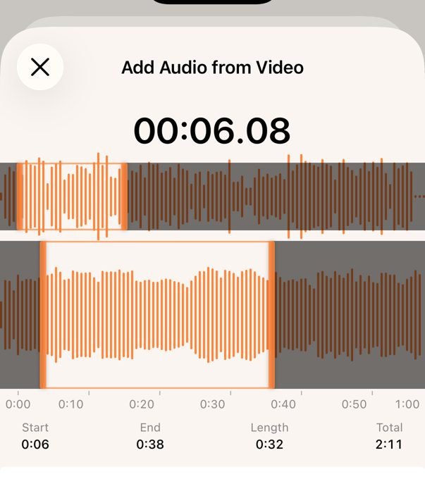

iPhone 알람을 노래의 원하는 부분으로 설정하는 방법
시계 앱에서도 노래를 알람으로 쓸 수 있지만, 항상 곡의 처음부터 재생합니다. 중간부터 재생하는 설정은 없습니다.
후렴부터 듣고 싶다면 GarageBand에서 30초 이내 벨소리를 만들거나, 소리를 잘라 쓸 수 있는 알람 앱을 사용합니다.
이 페이지는 그런 앱 중 하나인 My Sound Alarm의 개발자가 썼습니다. 시계 앱과 GarageBand 단계는 Apple 지원 문서를 따랐습니다.
곡의 처음부터 들어도 된다면: 시계 앱
- 시계 앱에서 ‘알람’을 열고 ‘+’를 탭합니다.
- ‘사운드’를 탭하고 보관함에서 노래를 고릅니다.
- ‘저장’을 탭합니다.
- Apple Music 노래는 iPhone에 다운로드되어 있으면 고를 수 있습니다.
30초면 충분하다면: GarageBand
GarageBand는 Apple의 음악 앱입니다. 노래의 일부를 벨소리로 내보내면, 그 벨소리가 시계 앱의 알람 소리 목록에 나타납니다. 탭할 단계가 조금 더 많습니다.
- 홈 화면에서 GarageBand 아이콘을 길게 눌러 새 오디오 녹음을 만듭니다.
- 트랙 보기를 연 다음 루프 브라우저를 엽니다.
- 파일에서 오디오 파일을 찾아 트랙의 왼쪽 끝으로 끌어다 놓습니다.
- 영역의 양쪽 끝을 끌어 30초 이내로 만든 다음 왼쪽 끝까지 옮깁니다.
- 노래를 고른 다음 공유 버튼을 눌러 벨소리로 내보냅니다.
- 시계 앱에서 알람의 사운드를 열고 벨소리 목록에서 고릅니다.
- 벨소리가 30초를 넘으면 내보낼 때 GarageBand가 줄입니다.
- 음악 앱의 노래는 보호되지 않은 것만 쓸 수 있습니다. 보호된 노래는 회색으로 표시됩니다.
30초를 넘기거나 동영상 소리를 쓰려면: My Sound Alarm
오디오 파일이나 동영상을 열고 파형에서 재생할 부분을 고르는 알람 앱입니다. 내보내는 단계가 없습니다.

- 알람을 추가할 때 ‘사운드’를 탭합니다.
- ‘오디오 파일 추가’(MP3, AAC, WAV, M4A) 또는 ‘동영상에서 추가’(사진 보관함, 파일)를 탭합니다.
- 파형에서 선택 범위의 양쪽 끝을 옮기고 ‘선택 부분 추가’를 탭합니다.
- 오디오 파일은 길이 제한이 없습니다. 동영상은 10분까지입니다.
- 고른 부분은 알람을 끌 때까지 반복해서 울립니다.
- 음악 앱의 노래(Apple Music 포함)는 읽을 수 없습니다.
- Apple의 AlarmKit으로 알람을 등록하므로 iOS 26 이상이 필요합니다.

나란히 비교
| 시계 | GarageBand | My Sound Alarm | |
|---|---|---|---|
| 중간부터 재생 | 안 됨 | 됨 | 됨 |
| 길이 | 곡 전체 | 30초까지 | 제한 없음(동영상은 10분까지) |
| 내보내기 | 필요 없음 | 필요 | 필요 없음 |
| 동영상 소리 | 안 됨 | 안 됨 | 됨 |
| Apple Music 노래 | 다운로드한 곡만 | 보호되지 않은 곡만 | 안 됨 |